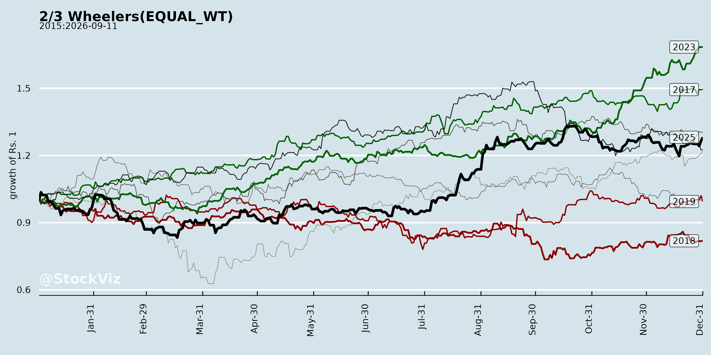
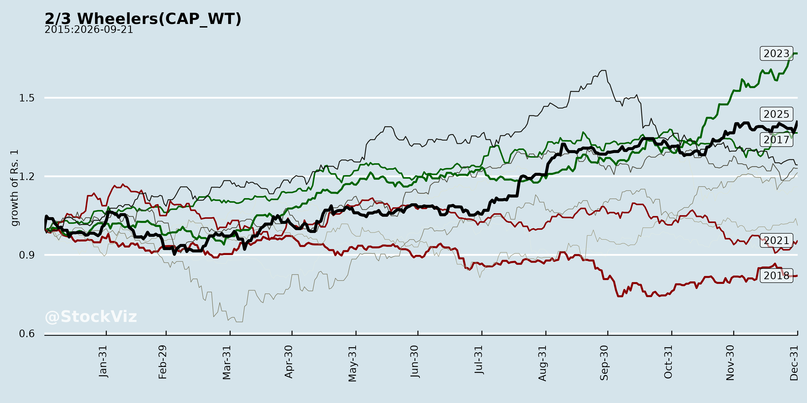
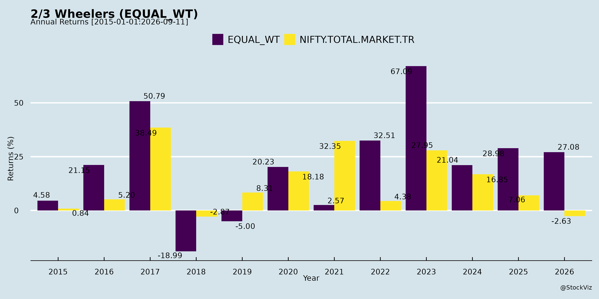
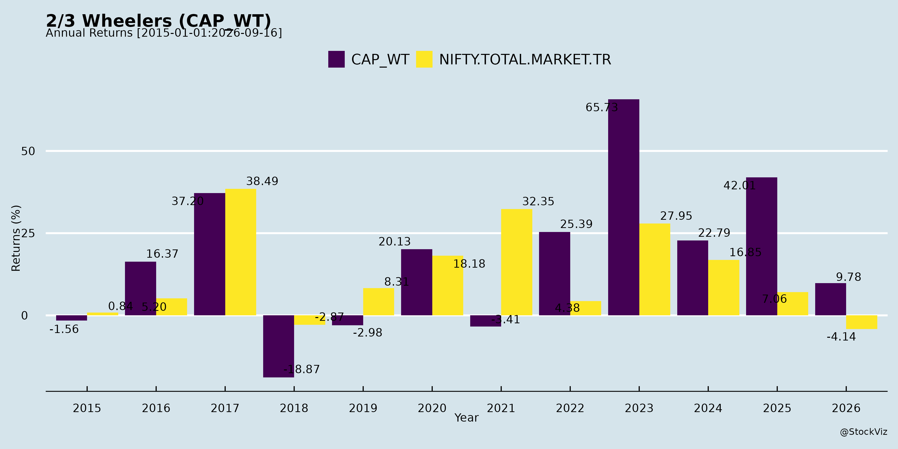
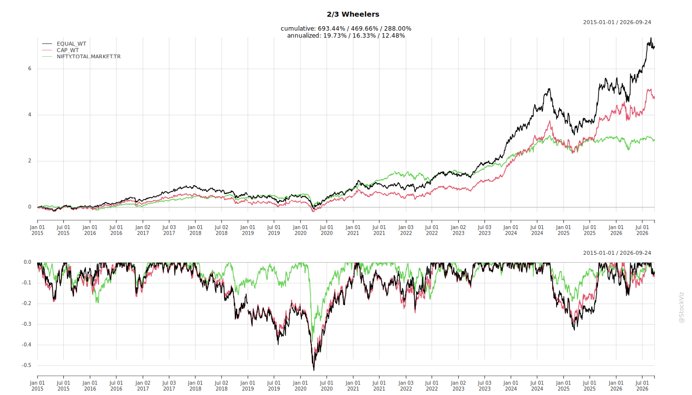
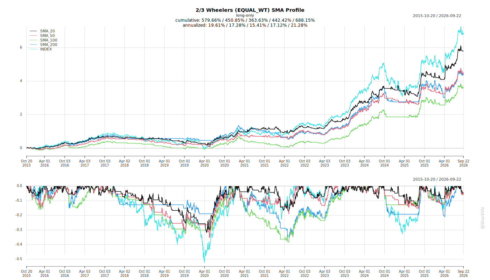
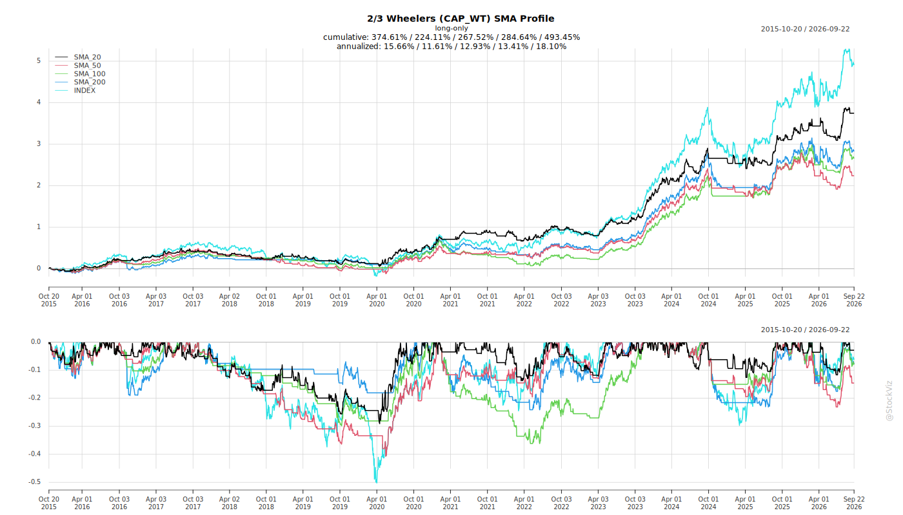
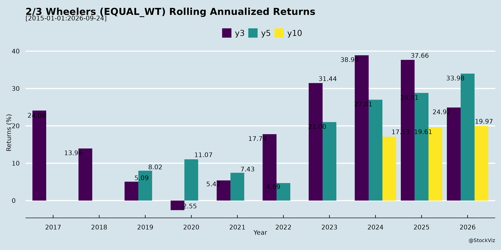
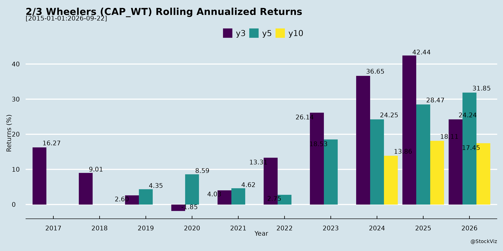

Annual Returns




Cumulative Returns and Drawdowns

SMA Scenarios


Current Distance from SMA
Rolling Returns


EBIT (% of Industry Total)
Revenue (% of Industry Total)
AI Summaries
Analyst
asof: 2025-11-30
Summary of Indian 2/3-Wheeler Sector Analysis
The provided documents are regulatory disclosures under SEBI LODR Regulation 30 from key players (TVS Motor, Bajaj Auto, Eicher Motors, Hero MotoCorp, Ather Energy, Ola Electric). They detail upcoming investor/analyst meetings, plant visits, and conferences in Nov 2025, reflecting high investor interest amid no sharing of UPSI. This signals sector optimism but offers limited operational insights. Overall: - Bullish tone from clustered events (e.g., BofA series across Bajaj, Eicher, Hero; Hosur plant focus for TVS/Ather). - No explicit negatives; emphasis on public info and flexibility.
| Tailwinds |
Strong institutional engagement (e.g., Aditya Birla, Axis, ICICI Pru, Invesco, Goldman Sachs for TVS; BofA events for Bajaj/Eicher/Hero). Plant visits (TVS Hosur factory, Ather Hosur) showcase manufacturing/EV capabilities. Physical/virtual mix indicates accessibility and confidence. |
| Headwinds |
None directly cited; schedules “subject to change due to exigencies” hints at operational unpredictability (e.g., investor/company side). No mentions of demand slowdowns or challenges. |
| Growth Prospects |
EV focus (Ather plant visit, Ola CLSA forum) + traditional leaders’ group meets suggest scaling in EVs, exports, premium bikes (Eicher). Multi-fund participation (20+ for TVS) points to expansion narratives; Hosur cluster highlights Tamil Nadu as EV/manufacturing hub. |
| Key Risks |
Event cancellations/delays (noted in all disclosures). Broader implied risks: No UPSI shared implies caution on sensitive topics (e.g., competition from EVs, supply chain). Reliance on public info limits deep dives for investors. |
Net Outlook: Positive momentum from investor roadshows amid EV transition; monitor post-event disclosures for details. Sector benefits from collective visibility but exposed to execution risks.
Financial
asof: 2025-12-01
Summary Analysis: Indian 2/3-Wheeler Industry (Based on Q3 FY25 Results of TVS Motor, Hero MotoCorp, and Ola Electric)
The Indian 2/3-wheeler sector shows resilient demand with volume/revenue growth led by ICE players (TVS, Hero), while EV pure-play Ola scales revenue but deepens losses amid execution challenges. Industry sales ~42L units in 9M FY25 (up ~10-15% YoY inferred from samples). Key metrics:
| TVS (Standalone) |
12.12L |
+10% |
+4% |
+16% |
| Hero (Standalone) |
14.64L |
+5% |
+12% |
+20% |
| Ola (Consol.) |
~1L (inf.) |
-20%* |
Loss ↑ |
Loss ↑ |
_*Ola YoY unaudited; revenue down Q3 but 9M +14%._
Tailwinds (Positive Drivers)
- Robust Volume/Revenue Growth: TVS +10% YoY volumes; Hero flat on high base but absolute leader (14.64L). Consolidated revenues up 5-10% amid festive demand/rural recovery.
- Margin Resilience: Hero EBITDA ~15-16% (inferred); TVS operating margin 11.9%; strong pricing power in premium/ scooters (TVS Apache, Hero Xtreme).
- Export & Diversification: TVS Africa/Europe expansion; Hero global subs; 3W strength (TVS).
- Capex Momentum: TVS ₹745 Cr subs investment; Ola cell tech ramp-up; Hero R&D infusion (₹124 Cr in associate Ather).
- Policy Support: PLI incentives (despite Ola reversal); EV infra push.
Headwinds (Challenges)
- EV Losses & Slowdown: Ola Q3 loss ₹564 Cr (9M ₹1,406 Cr); revenue dip signals demand softness/competition (TVS/Hero EV share gaining).
- Cost Pressures: Raw material inflation (TVS/Hero materials 70% of costs); Ola COGS high (83% of rev).
- Regulatory/Quality Scrutiny: Ola CCPA notices (consumer complaints); Hero IT disallowance (₹178 Cr demand, under appeal) + probes.
- Inventory Build: Ola +ve changes; Hero flat demand signals.
- Margin Squeeze: TVS other income drag (₹41 Cr FV loss); Hero VRS exceptional (prior).
Growth Prospects
- High (15-20% CAGR to FY28): ICE stabilization + EV shift (10% market now, 30% by 2030). Hero/TVS premium/exports to drive; Ola targets 1M+ annual via vertical integration (cells).
- EV Tailwind: Ola 9M rev +14%; TVS Drivell sub; Hero Ather tie-up. Festive/volumes signal 45-50M annual industry by FY27.
- Premium/3W: TVS/Hero margins >12%; exports 20%+ growth.
- Subsidiary Synergies: TVS financials (TVS Credit) up 11%; Hero FinCorp stable.
Key Risks
- EV Execution (High): Ola fires/recalls/CCPA; battery supply (cell delays); competition (TVS iQube, Bajaj Chetak, Ather).
- Regulatory/Tax (Medium): Hero probes/IT appeals; PLI reversals (Ola ₹23 Cr hit).
- Macro/Demand (Medium): Rural slowdown (monsoons); high rates curb financing (NBFC subs vulnerable).
- Competition/Geopolitics (Medium): Chinese imports; Honda/Bajaj aggression.
- Valuation/Capex (Low-Medium): Ola losses erode IPO proceeds (₹5,341 Cr utilized partially); TVS debt low (0.12x standalone).
Overall Outlook: ICE leaders (Hero/TVS) stable-profitable; EV pivot offers 20%+ growth but with volatility. Sector poised for 12-15% FY25 growth, led by premiums/EVs, but monitor EV quality/macro. Hero/TVS: Buy/Hold; Ola: High-Risk Growth.
General
asof: 2025-11-30
Summary Analysis: Indian 2/3 Wheeler Sector (Based on Provided Filings)
The filings from key players (TVS Motor, Bajaj Auto, Eicher Motors, Hero MotoCorp, Ather Energy, Ola Electric) highlight a mixed sector outlook as of late 2025. Traditional players focus on routine compliance and financing (e.g., debt redemption, IPO updates), while EV-focused firms like Ola and Ather emphasize operational milestones amid slowing E2W demand. Ola’s Q2 FY26 shareholder letter provides the deepest insights into EV trends. Overall, the sector faces near-term demand softness but shows resilience through cost discipline, diversification, and vertical integration.
Headwinds
- Demand Slowdown: Ola notes E2W industry volumes flat YoY during festive season (Graph 1), with slowed growth over recent quarters due to value-conscious consumers delaying purchases amid high competition. Deliveries moderated (e.g., Ola: 52,666 units in Q2 FY26 vs. 98k in Q2 FY25).
- Intense Competition: Aggressive discounting and channel incentives by OEMs erode margins; Ola contrasts this by prioritizing profitability over volumes.
- Regulatory/Compliance Pressures: Eicher faces minor E-waybill penalty (₹16.5L, under appeal, no material impact); routine but signals GST scrutiny.
- Investment Exits: TVS monetizing Rapido stake (~₹288 Cr) indicates de-risking non-core assets amid uncertain ride-sharing synergies.
Tailwinds
- Margin Expansion & Profitability: Ola achieves first Auto EBITDA positivity (0.3%, Graph 5) with gross margins at 30.7% (+510 bps QoQ, minimal PLI reliance); opex down 16% QoQ. Auto business cash-generative (underlying CFO +₹15 Cr ex-festive inventory).
- Vertical Integration: Ola’s Gigafactory ramps to 2.5 GWh (5.9 GWh by Mar 2026), enabling in-house 4680 cells, ferrite motors, and cost savings (GM target 40% by FY26-end).
- Financing Stability: Bajaj Auto’s subsidiary redeems ₹500 Cr CP seamlessly; Hero FinCorp’s IPO addendum (fresh issue + OFS ~₹3,668 Cr) signals strong associate funding.
- Service & Ecosystem: Ola’s HyperService unlocks high-margin parts (50%+ GM potential, currently 2.5% of revenue vs. industry 10-15%).
Growth Prospects
- EV Scale & Diversification: Ola targets H2 FY26 deliveries at ~100k units, FY26 revenue ₹3,000-3,200 Cr; expanding into Energy (Ola Shakti BESS: ₹100 Cr Q4 FY26, ₹1,000-1,200 Cr FY27 at 40-50% GM; grid-scale BESS by Q1 FY27). Cell capacity to 20 GWh by H2 FY27, capturing rooftop solar/grid storage boom (India: 51 GWh tenders CY25).
- Product Roadmap: Ola’s Gen3 platform, Roadster growth (15% of sales), MoveOS6 (ADAS/ABS); Ather’s AGM prep signals steady listed operations.
- Broader Ecosystem: Hero FinCorp IPO unlocks financing growth; TVS Rapido exit yields ₹288 Cr liquidity for core 2W focus.
- Sector Tail: PLI incentives, EV penetration rising (Graph 1: ~3-4% in FY26), domestic manufacturing edge vs. imports.
Key Risks
- Volume & Market Risks: Moderated guidance (Ola: lower-than-expected FY26 volumes); prolonged slowdown could pressure cash flows (consolidated EBITDA still -18.1%).
- Execution/Scale Risks: Ola’s cell ramp, BESS launches, and capex (₹100-150 Cr H2 FY26 Auto + Gigafactory) hinge on supply chain/talent; FCF negative (-₹350 Cr Q2 FY26).
- Competition & Pricing: Margin erosion from rivals’ discounts; incentive dependency (PLI ~2% of Ola GM).
- Financial/Legal: Debt obligations rising (Graph 12); minor penalties (Eicher) could scale; Ola’s losses persist (PAT -₹418 Cr Q2 FY26).
- Macro/Regulatory: Festive flatness signals economic caution; forex/volatility in EV components; IPO delays (Hero FinCorp).
Overall Outlook: Transition year for EVs (profitability focus > volumes) amid ICE stability. Ola/Ather lead EV innovation, but sector growth hinges on demand revival (mid-FY27) and energy diversification. Bullish long-term on localization/energy storage; near-term cautious (hold/neutral).
Investor
asof: 2025-11-30
Summary Analysis: Indian 2/3-Wheeler Sector (Based on Provided Disclosures)
The provided documents are SEBI Regulation 30 disclosures from key players in the Indian 2/3-wheeler industry—TVS Motor, Bajaj Auto, Eicher Motors (Royal Enfield), Hero MotoCorp, Ather Energy, and Ola Electric—detailing upcoming investor/analyst meetings, plant visits, and conferences in late November 2025. These filings highlight elevated institutional interest amid a clustered schedule of events (e.g., BofA Boardroom Series on Nov 27-28), signaling positive sector momentum. No financials or UPSI are shared, but the volume and nature of engagements (physical factory tours, group meets with top fund houses) infer operational confidence. Below is a structured analysis of headwinds, tailwinds, growth prospects, and key risks.
Tailwinds
- High Institutional Engagement: Over 25 representatives from marquee investors (e.g., Goldman Sachs, ICICI Pru, Invesco, Aditya Birla Sun Life, PPFAS, Premji Invest) attending TVS’s group meet alone. Cross-company BofA events (Bajaj, Eicher, Hero) and EV-focused activities (Ather plant visit, Ola CLSA Forum) indicate broad analyst coverage and sector roadshows.
- Showcasing Operations: Physical meets at factories (TVS Hosur, Ather Hosur) emphasize manufacturing scale, supply chain strength, and capacity utilization—key for post-festive/rural recovery narratives.
- EV Momentum: Ather and Ola’s proactive disclosures (plant visit, Mumbai forum) align with government EV incentives (e.g., FAME-III expectations), positioning them as growth leaders.
- Timing: Late Nov 2025 clustering suggests pre-Q3 FY26 earnings hype, festive sales tailwinds, and rural demand revival.
Headwinds
- Schedule Volatility: All filings note dates/venues “subject to change due to exigencies” (company/investor side), hinting at operational disruptions (e.g., supply chain delays, regulatory hurdles).
- Macro Pressures Inferred: No direct mentions, but clustered virtual/physical formats may reflect cost controls amid high input costs (metals, chips) or muted urban demand.
- EV-Specific: Ather/Ola’s earlier dates (Nov 19-22) vs. ICE peers (Nov 27-28) could signal competitive intensity or funding needs in a capital-intensive shift.
Growth Prospects
- Sector-Wide Optimism: Multi-company BofA series (virtual from Pune/Mumbai) and TVS’s large annexure point to expected volume growth (e.g., 8-12% YoY industry estimates), driven by premiumization (Royal Enfield), exports (Bajaj/TVS), and EVs (30%+ CAGR potential).
- Capacity Expansion Visibility: Hosur-focused plant visits (TVS/Ather) spotlight scaling for 10-15M unit market, with EVs targeting 10-15% penetration by FY27.
- Investor Appetite: Diverse attendees (mutual funds, insurance, PE like Premji/Catamaran) suggest rerating potential, especially post-earnings. Ola’s “multiple one-on-one/group” at CLSA reinforces premium EV narrative.
- Outlook: Strong festive/rural tailwinds + export diversification could drive 10-15% revenue growth; EVs as 20-30% segment CAGR.
Key Risks
| Event Disruptions |
Changes in schedules (noted in all filings) due to logistics/exigencies. |
Could signal supply bottlenecks or weak demand signals. |
| No UPSI Assurance |
Explicit “no unpublished price sensitive info” shared. |
Limits insights; any surprises reserved for earnings. |
| Competitive Intensity |
Clustered events amid EV transition (Ather/Ola vs. ICE giants). |
Margin pressure from price wars, subsidies dependency. |
| External Factors |
Implicit: Rural slowdown, inflation, monsoons (not disclosed). |
Virtual fallback modes suggest caution on physical access. |
| Regulatory/Execution |
SEBI compliance focus; EV policy shifts. |
Delays in FAME/PLI could hit Ather/Ola scaling. |
Overall Verdict: Net Positive (Tailwinds > Headwinds). Disclosures reflect robust investor confidence in a recovering sector (festive boost, EV shift), with growth prospects pegged at 10-15% industry volumes. Risks remain execution-focused (supply, competition), but high engagement levels mitigate downside. Monitor Q3 FY26 results for validation. Limited to disclosure inferences; substantive analysis needs earnings data.
Indian 2/3 Wheelers Sector Analysis (Based on Q2/H1 FY26 Filings)
The filings from key players (TVS Motor, Bajaj Auto, Eicher Motors/Royal Enfield, Hero MotoCorp, Ather Energy, Ola Electric) reflect a robust recovery and growth phase post-festive demand surge, with ICE (Internal Combustion Engine) dominance persisting alongside accelerating EV adoption. Hero MotoCorp leads with record revenues (₹12,126 Cr Q2, +16% YoY), market share gains (40 bps festive), and EV traction via VIDA. Eicher shows strong profitability (PAT ₹1,369 Cr Q2 consolidated). Legacy players report healthy profits/margins, while EV pure-plays (Ather, Ola) scale revenues but remain loss-making. Approvals for fundraising (Ola) and RPTs (Bajaj) signal capex continuity. Overall sector volumes ~16-30L units/quarter, with exports/EV as bright spots.
Tailwinds (Positive Drivers)
- Demand Surge & Market Share Gains: Hero’s 16.9L units Q2 (+11% YoY), festive ICE registrations +16.2% (vs industry +14.7%). Eicher revenue +47% Q/Q. Legacy OEMs (Hero, Eicher, TVS) benefit from GST reforms boosting sentiment, new launches (e.g., Hero’s HF Deluxe Pro, Xpulse 210; Eicher’s VX2).
- EBITDA/PAT Expansion: Hero EBITDA +20% Q2 (15% margin), Eicher PAT +36% H1. Bajaj/TVS resolutions passed unanimously, enabling strategic moves.
- EV Momentum: Hero VIDA hits 11.7% EV share; Ather revenue ₹8,989 Cr Q2 (+54% Q/Q post-IPO); Ola/TVS/Bajaj expanding portfolios (e.g., Ola fundraising for scaling).
- Exports/Global Push: Hero exports +77%; Eicher/TVS strong in LatAm/Europe. Entry into Europe/UK (Hero).
- Corporate Actions: Postal ballots/AGMs approve fundraising (Ola), RPTs (Bajaj for KTM restructuring), investments (Hero ₹170 Cr parts center).
Headwinds (Challenges)
- EV Losses & Capex Intensity: Ather/Ola deep losses (Ather ₹1,541 Cr Q2; Ola implied via peers). High depreciation (Ather 426 Cr Q2), employee costs (Eicher +20% YoY).
- Supply Chain Disruptions: Ather flags China rare earth magnet ban impacting PMP compliance/PM E-DRIVE incentives (₹192 Cr deferred revenue).
- Input Costs/Inventories: Raw material costs ~60-70% of revenue; inventory builds (Eicher +24% YoY).
- Regulatory Uncertainty: All flag ELV Rules 2025 (EPR obligations unestimable due to pending portal/pricing).
- Leadership Transitions: Hero CS resignation; Bajaj/TVS stable but KTM restructuring signals stress.
Growth Prospects
- Short-Term (FY26): Festive tailwinds sustain; ICE + EV mix drives 10-20% revenue growth. Hero targets sustained momentum via launches; Eicher EV exports (Europe). Sector volumes to hit 60-65L FY26e on rural revival/GST benefits.
- Medium-Term (2-3 Yrs): EV penetration to 15-20% (from ~5%); Ather/Ola post-IPO scaling (Ather cash ₹7.9 Bn). Exports 20-25% of volumes (Hero/Bajaj). Policy tailwinds (PM E-DRIVE, PLI).
- Long-Term: ₹1L Cr+ sector mkt cap potential; consolidation via JVs (Eicher Polaris, Bajaj KTM). Sustainability (DJSI scores up for Hero).
Key Risks
| Execution/Financial |
EV cash burn (Ather H1 loss ₹3.3 Bn); high debt (Ather borrowings ₹2.7 Bn). Hero tax demands (₹178 Cr). |
Strong ICE cashflows fund EV; IPO infusions (Ather ₹26 Bn). |
| Regulatory/Policy |
ELV EPR unquantifiable; incentive deferrals (Ather); FPI voting curbs (Bajaj). |
Industry lobbying; phased compliance. |
| Supply/External |
China magnet ban; forex volatility (Eicher OCI swings). Commodity inflation. |
Diversification (Hero global parts); hedging. |
| Competition/Market |
Intense EV rivalry (Ola/Ather/Hero VIDA); festive dependence (80% annual sales). |
Differentiation (Hero affordability; Eicher premium). |
| Operational |
PMP deviations; capex overruns (Ather ₹2.2 Bn Q2). Talent churn (Hero CS exit). |
Fundraising (Ola approved); ESOPs. |
Overall Outlook: Bullish with caution. Sector poised for 12-15% CAGR FY26-28 on ICE stability + EV inflection (~30% sector growth). Legacy players (Hero/Eicher) de-risked; EV firms high-beta (scale or perish). Monitor ELV/China risks quarterly.
Press Release
asof: 2025-12-01
Indian 2/3-Wheelers Sector Analysis (Based on Provided Announcements)
The Indian 2/3-wheelers sector demonstrates resilient growth momentum in FY26, driven by festive demand, GST reforms, premiumization, EV acceleration, and exports. Companies like Hero MotoCorp, Eicher Motors (Royal Enfield), Bajaj Auto, TVS Motor, Ather Energy, and Ola Electric report record revenues, market share gains, and new launches. Total sector volumes remain robust (e.g., Bajaj’s 4.53L units in Nov’25, up 8% YoY; Eicher RE at 3.27L units in Q2, up 45%), though entry-level domestic ICE segments show softness. EV sub-segment is a bright spot amid premium shifts.
Tailwinds (Positive Drivers)
- Festive and Policy Boost: Strong festive sales (Hero: 16.2% ICE growth > industry 14.7%; Eicher: record 2.49L units). GST rationalization enhances affordability for <350cc bikes/scooters, boosting sentiment (Hero, Eicher).
- Volume & Revenue Surge: Hero Q2 revenue up 16% to ₹12,126 Cr (highest ever); Eicher revenue up 45% to ₹26,172 Cr; Bajaj Nov total sales +8% YoY (CVs +37%); Ather Q2 volumes +67% YoY to 65,595 units.
- EV Momentum: Ather market share at 17.4% (South: 25%); Hero VIDA at 11.7% share; Ola’s 4680 Bharat Cell (ARAI-certified, 320km range) starts test rides. Ecosystem revenue growing (Ather: 12% of income from software/charging).
- Exports & Global Expansion: Bajaj YTD exports +19%; Hero +77% dispatch growth, entering Europe/UK with Euro5+ compliant models.
- Premiumization & Partnerships: TVS-BMW 200k unit milestone, F450 GS rollout; Eicher RE mid-size leadership; Hero/Bajaj new launches (e.g., HF Deluxe Pro, Rizta).
- Margin Expansion: Hero EBITDA margin +55bps to 15%; Ather adjusted gross margin +300bps to 22%, EBITDA losses -1,100bps YoY.
Headwinds (Challenges)
- Domestic ICE Softness: Bajaj domestic 2W -1% (Nov), -5% YTD; Hero H1 volumes flat at 30.58L units despite revenue growth (premium mix helps).
- EV Losses & Scale Hurdles: Ather Q2 EBITDA loss ₹90.7 Cr (though improving); high capex for infra/retail (Ather: 524 ECs; Ola: 4,000+ stores).
- Talent/Operational Friction: Hero CS resignation (minor, but signals transitions).
- Regional Imbalances: Growth concentrated in South/Middle India (Ather); broader penetration needed.
Growth Prospects
- EV Leadership: High potential with family scooters (Ather Rizta), off-road (Ola Roadster X, Hero VIDA Dirt.E), advanced batteries (Ola 4680), and infra (Ather Grid: 4,322 chargers). Policy tailwinds could drive 20-30%+ CAGR.
- Premium & Exports: Mid-size bikes (RE, BMW co-dev) and global markets (100+ countries for TVS-BMW) to sustain 10-15% growth. Bajaj CV exports +56% YTD signals 3W upside.
- Ecosystem & Tech: Software (AtherStack 7.0, 89% adoption), events (RE One Ride/Motoverse), and investments (Hero ₹170 Cr parts center) for sticky revenue.
- Overall Outlook: 5-10% sector growth in FY26 (fading domestic weakness via GST/EV), led by premium/EV (20%+ share). YTD Bajaj total +5% sets base.
Key Risks
| Demand Volatility |
Entry-level slowdown persists if rural sentiment weakens (Bajaj domestic -5% YTD). |
High |
| EV Execution |
Profitability delays (Ather/Ola losses); charging infra gaps; subsidy/PLI changes. |
High |
| Competition |
Intense EV rivalry (Ola/Ather/Hero TVS); Chinese imports in budget segments. |
Medium-High |
| Cost Pressures |
Raw material inflation could erode margins (EBITDA gains vulnerable). |
Medium |
| Regulatory/Macro |
GST reversal or BS-VII norms; forex/geopolitical hits exports. |
Medium |
| Supply Chain |
Battery/tech dependency (e.g., Ola’s indigenization unproven at scale). |
Medium |
Summary: The sector enjoys strong tailwinds from policy, EVs, and premiums, offsetting domestic ICE headwinds, with 10%+ FY26 growth likely (led by Hero/Eicher/Bajaj). EV transition (17%+ shares for leaders) and exports are key prospects, but risks center on volumes, profitability, and competition. Bullish near-term on GST momentum; monitor rural/EV scale for sustained upside.
Copyright © 2023 SAS Data Analytics Pvt. Ltd. All rights reserved.
🐞